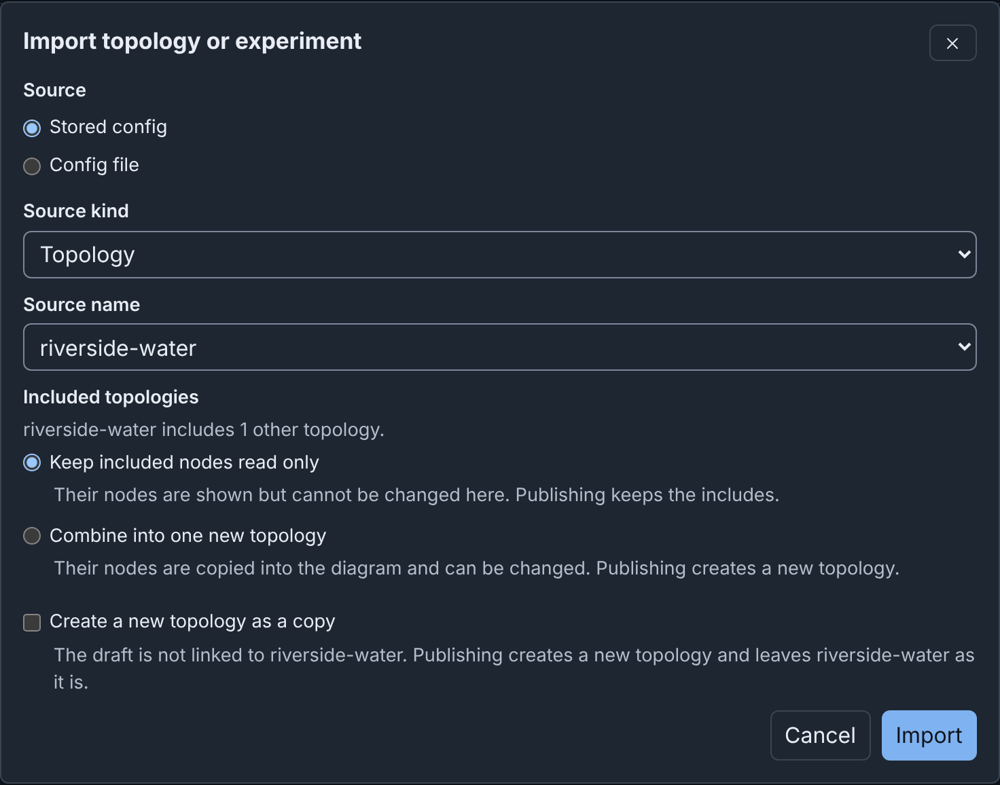
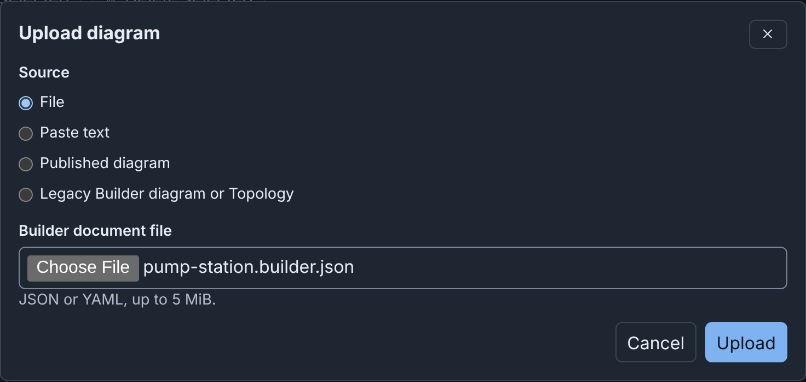
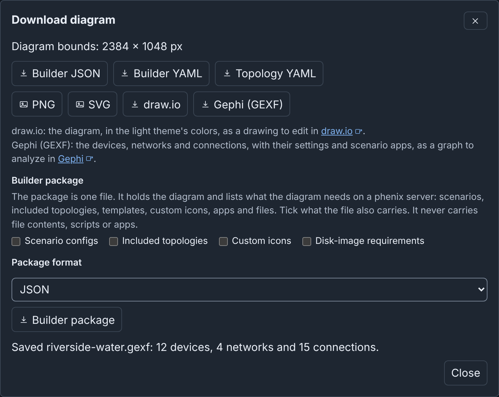
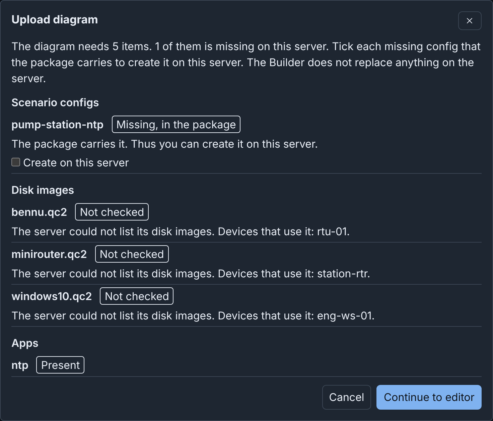

Import, Upload and Download¶
Builder uses three words for three tasks:
- Import makes a draft from a Topology or Experiment config, stored in phēnix or in a file.
- Upload opens a file that is already a diagram as a new draft. The file can be a Builder document, a Builder package, a published diagram or a legacy Builder diagram.
- Download saves the open diagram as a file, in one of seven formats or as a Builder package.
None of these tasks changes a config. In the Web-UI, only Publish writes configs (see Publishing).
Import a stored topology¶
- On the drafts page, click Import.
- Keep Source set to Stored config and Source kind set to Topology.
- In Source name, select
riverside-water. The dialog shows Included topologies, becauseriverside-waterincludescorp-services. - Click Import. The dialog shows 1 warning: the 2 devices from
corp-servicesare read only. - Click Continue to editor.

The draft has the name of the config. An import without warnings opens the editor at once. Cancel makes no draft.
Import an experiment¶
Set Source kind to Experiment. In Source name, select the
experiment, for example riverside. An imported experiment differs from
an imported topology:
- The draft lists the scenario of the experiment, when your role can list it, but never keeps the copy in the experiment.
- The VLAN aliases of the experiment become the VLAN alias of each network.
- The import does not keep the VLAN range, or experiment fields such as
baseDir, and warns about them. - The import does not keep the files that experiment apps injected into VMs at start, and does not warn about them. It keeps the injections of the topology.
The import also removes the values that phēnix added when it created the experiment (see Importing an experiment).
Import a config file¶
- Click Import.
- Set Source to Config file.
- In Topology or Experiment config, choose the file, for example pump-station.topology.yaml. The file can be JSON or YAML, up to 5 MiB.
- Click Import.
A draft from a config file can only publish a new topology, also when a
stored config has the same name. Builder keeps each ${NAME} and
${NAME:default} in the file as written. Unlike phenix config create,
it never replaces them with values from the environment of the server.
Edit such a value in the draft before you publish (see
Importing a config file).
Import options¶
When the topology includes other topologies, the dialog offers:
- Keep included nodes read only, the default. You cannot change the included nodes in the draft, and publishing keeps the includes.
- Combine into one new topology. The import copies the included nodes into the diagram as ordinary devices, and publishing creates a new topology.
Create a new topology as a copy shows for a stored topology when you
do not combine. With a copy or a combined import, New topology name
proposes the source name with -copy or -combined. Such a draft is not
linked to the source topology and cannot update it (see
Import options).
From the Configs page¶
On the Configs page, the tag builder marks a topology with a Builder
diagram and opens it in Builder. A topology without a diagram has
Import into Builder in its viewer, which opens the Import dialog
set to that topology. The tag builder legacy marks a topology from the
legacy Builder (see
From the Configs page).
What an import keeps¶
- Every node, as a device, with all of its settings, in the order of the config.
- One network and one switch for each VLAN, with each interface connected to the switch of its VLAN.
- The devices of included topologies, read only, unless you combine them.
- The annotations of the config, which the Inspector shows with nothing selected. Publishing does not write them.
An import uses the Default layout: the devices in rows on a grid, and the switches below them. It sets no subnet or gateway, because a config has none. A warning names every other change (see What an import keeps).
Upload a Builder document¶
A Builder document is the file that Download > Builder JSON or Builder YAML saves (see Builder JSON and YAML). Upload opens one as a new draft:
- On the drafts page or in the editor toolbar, click Upload.
- Keep Source set to File.
- In Builder document file, choose the file, for example pump-station.builder.json.
- Click Upload. The new draft has the name in the document.

Source has three other choices:
- Paste text takes the document as text.
- Published diagram opens the draft of a published diagram.
- Legacy Builder diagram or Topology converts a diagram from the legacy Builder (see Legacy Builder).
Upload refuses a config, a template file, a layer set file, a file that is not JSON or YAML, and a file over 5 MiB. The dialog gives the reason (see Uploading a Builder document).
Download¶
- Open the draft.
- Click Download.
- Click a format. The browser saves the file.
- Click Close.

| Button | What the file holds | Open it with |
|---|---|---|
| Builder JSON | The whole diagram, with its icons and templates | Upload |
| Builder YAML | The same, as YAML | Upload |
| Topology YAML | The Topology config that Publish would write | phenix config create, or Import |
| PNG | A picture of the whole diagram | An image viewer |
| SVG | The same picture, as SVG | A web browser |
| draw.io | The diagram, in the draw.io format | draw.io |
| Gephi (GEXF) | The devices, networks and connections, in the GEXF format | Gephi |
| Builder package | The diagram with the configs and icons that you tick | Upload |
The file name is the diagram name in lower case with hyphens, for example
riverside-water.png (see Download formats).
For Topology YAML, when the diagram cannot be published yet, the
dialog saves the file and lists each reason. Thus the download is a quick
way to see what blocks publishing (see
Topology YAML).
phenix config create stores this file as a topology without its diagram.
To store both, publish the draft (see Publishing).
PNG and SVG draw the whole diagram, with the background of the theme in use (see PNG and SVG). Builder cannot open a draw.io or GEXF file (see draw.io and Gephi (GEXF)).
Move a diagram with a Builder package¶
Another phēnix server may not have the scenarios, included topologies, custom icons and disk images that a diagram names. A Builder package is one JSON or YAML file. It holds the diagram, the configs and icons that you tick, and a list of everything that the diagram needs.
To download a package:
- Click Download.
- Under Builder package, tick Scenario configs, Included topologies, Custom icons or Disk-image requirements.
- In Package format, select JSON or YAML.
- Click Builder package.
To upload a package on the other server:
- Click Upload.
- In Builder document file, choose the package file.
- Click Upload. The dialog lists each item that the diagram needs as Present, Missing, Different or Not checked.
- For each missing config to create, tick Create on this server. Builder never replaces a config that the server has.
- Click Continue to editor. Builder creates the ticked configs, adds the missing icons, and opens the diagram as a new draft.

A package never holds disk images, apps or files. It lists them by name (see Moving a diagram with a Builder package).
Advanced¶
- A layer set file holds one layer set of the library. You download and upload it on the Layers tab of the drafts page. See Layer set files.
phenix config createrefuses a Builder document, a template file, a package and a layer set file, and skips them in a directory. See Builder documents andphenix config create.- A topology in a repository can name its Builder file in its
builder-docannotation, and its diagram then opens from the file. See A Builder file beside a topology. - A Builder document records who made the diagram and who saved it last. See Who made and last saved a diagram.
More detail¶
- Import, Upload and Download: details: every rule, option and message.
- File formats.
- Legacy Builder: converting diagrams of the old editor.